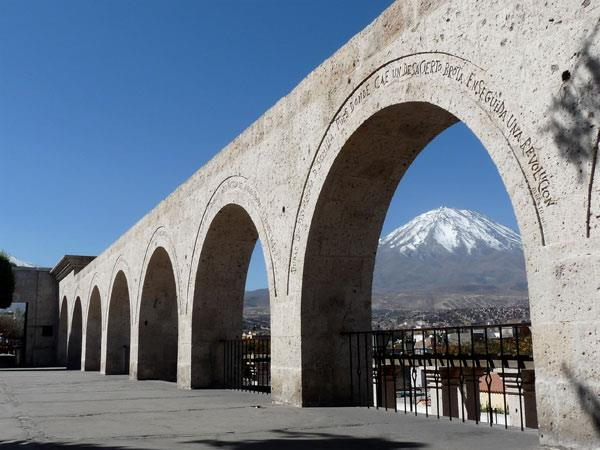

Plaza de Armas
La Catedral de Arequipa, se construyó en sillar (piedra de origen volcánico), con bóvedas de ladrillo; es la iglesia principal de la ciudad que ocupa todo el lado norte de la Plaza de Armas...

Mirador de Yanahuara
El Mirador de Yanahuara está situado a un costado de la plaza de Yanahuara, a 10 minutos del centro de la ciudad. Un barrio tradicional de Arequipa con calles angostas...
Monasterio de Santa Catalina
La ciudadela se ubicó al sur del Perú en la ciudad de Arequipa, fundada el 10 de septiembre de 1579 y ubicada en una zona que destaca por su belleza natural, clima acogedor...
Volcán Misti
Está localizado a los pies del valle del río Chili, a 2400 m s.n.m. Se ha convertido en uno de los mayores símbolos de Arequipa...
Molino de Sabandía
El Molino de Sabandía es, como su mismo nombre ya indica, un molino que se encuentra en el distrito de Sabandía, en la provincia y región de Arequipa...
Catedral de Arequipa
La Catedral de Arequipa (también conocida como Catedral basílica de Arequipa) es considerada uno de los primeros monumentos religiosos del siglo XVII en Arequipa...